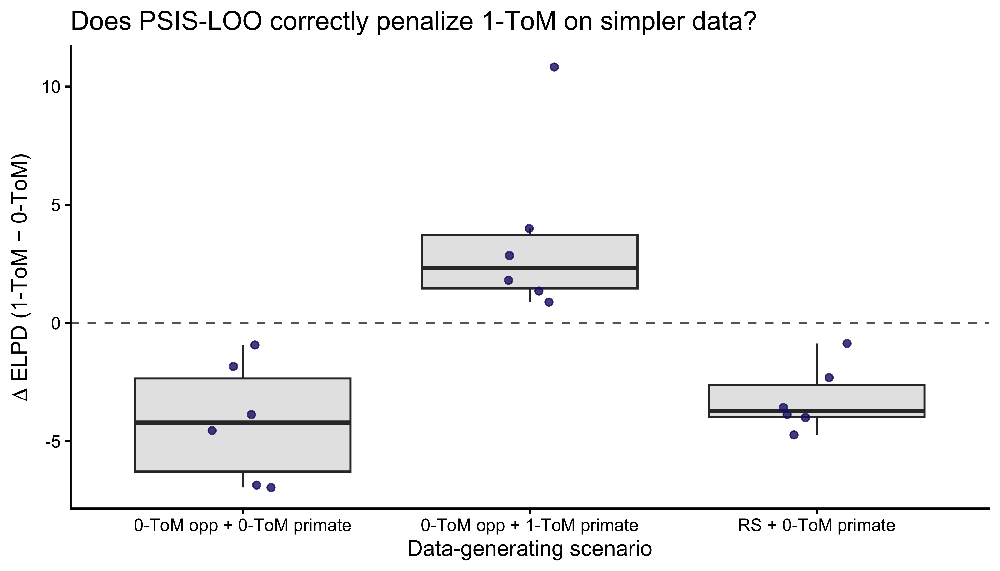
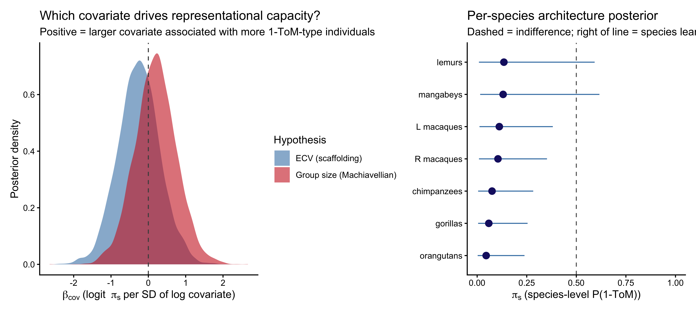
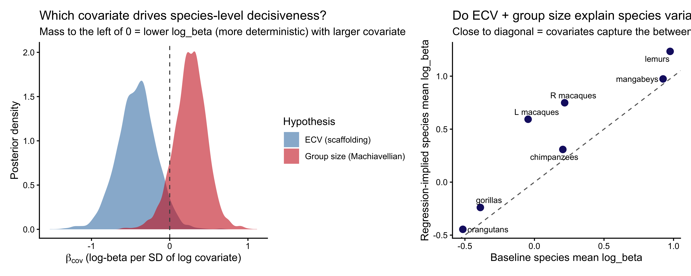

📍 Where we are in the Bayesian modeling workflow: Chapters 1–6 built, validated, and scaled single-process models of choice behavior. Chapter 7 taught us how to compare competing theoretical accounts using out-of-sample predictive performance. In all of that, our agent reacted to the statistics of the environment: a biased coin, a rate that occasionally reversed, an opponent treated as a stochastic source to be tracked. We now take the step that actually makes the environment social: our agent reasons about the mind producing the behavior on the other side of the table. This chapter develops the \(k\)-level Theory of Mind (\(k\)-ToM) family — both a simple 0-ToM tracker and a genuinely recursive 1-ToM — applies the full six-phase validation battery from Ch. 5–6 to them, performs an Occam’s-razor model-comparison study in the spirit of Ch. 7, and then fits a joint hierarchical model to seven primate species (Devaine et al., 2017) that regresses individual-level ToM parameters on standardized endocranial volume (ECV) and social group size. Those two covariates are the empirical stand-ins for the cognitive scaffolding hypothesis and the Machiavellian intelligence hypothesis, respectively.
10.1 Introduction
So far every model we have written shares a structural assumption: there is an environment, it produces observations with some statistical regularity, and our agent learns that regularity. The Biased Agent assumed a fixed coin. The Memory Agent tracked a rate that could drift or reverse. In both, the opponent — if we even called it that — was a passive data-generating process.
This assumption breaks the moment we play a competitive game with another adaptive agent. If I hide a coin and you try to guess where it is, then the optimal thing for me to do depends on what I think you think I will do. And the optimal thing for you to do depends on what you think I think you will do. The statistics of the environment are no longer exogenous — they are the output of a mind that is trying to anticipate mine.
Theory of Mind (ToM) is the psychology-and-cognitive-science label for the capacity to represent other agents as having mental states (beliefs, desires, intentions) and to use those representations to predict their behavior. The concept is old, verbal, and famously under-specified (Schaafsma et al., 2015; Quesque & Rossetti, 2020). What Devaine, Hollard, and Daunizeau (2014a, 2014b) and the tomsup package (Waade et al., 2022) contribute is a computational definition: a family of agents, indexed by a recursion depth \(k\), that formally specifies what it means to mentalize at level 0, 1, 2, and beyond. Armed with such a definition we can do what we have done in every previous chapter — simulate, recover, validate, and compare — and use those tools to ask whether a particular dataset is better explained by agents who mentalize or agents who do not.
10.1.1 The estimand
Before writing a single line of code, let us be precise about what we are trying to learn. Our target quantity has two layers:
Individual level. For each individual (here, each primate), what are the posterior distributions over their \(k\)-ToM parameters — volatility \(\sigma\), behavioural temperature \(\beta\), bias \(b\) — when we fit 0-ToM and when we fit 1-ToM? Which model predicts that individual’s trial-by-trial choices better out of sample?
Population level. Does individual-level behavioural temperature (the parameter that most directly controls how strongly an agent’s expected-utility computation translates into action) vary systematically with species-level covariates? Two candidates are pre-registered by competing evolutionary hypotheses: social group size (Machiavellian intelligence) and endocranial volume (cognitive scaffolding). The only way to arbitrate is to fit the individual-level model and then regress the individual-level posteriors on both covariates jointly, so that each coefficient is estimated with the other held constant.
Both layers matter. Fitting \(k\)-ToM to one participant and declaring them a “2-ToM” would be Ch. 2-style estimation: a point estimate that ignores uncertainty and population structure. Running a single logistic regression of win rate on ECV would be a pre-Ch. 5 shortcut that throws away the mechanistic model entirely. The estimand only makes sense if we carry individual-level posterior uncertainty through to the species-level inference — exactly the architecture Ch. 6 built.
10.2 Learning Objectives
After completing this chapter, you will be able to:
Motivate recursive ToM by contrasting it with statistical learning, and articulate why a competitive game with an adaptive opponent breaks the passive-environment assumption.
Specify the 0-ToM learning rule as a Kalman-filter-like update on the log-odds of the opponent’s choice probability, with three parameters: volatility \(\sigma\), behavioural temperature \(\beta\), and bias \(b\).
Specify a true recursive 1-ToM that tracks the opponent’s belief about the agent itself, and understand why this is qualitatively different from influence learning (Hampton et al., 2008), which we treat as an intermediate proto-ToM reference.
Simulate all three agents in R against each other and against non-ToM baselines.
Implement 0-ToM and 1-ToM in Stan with the recursive latent state unrolled in transformed parameters, priors on log-scale hyperparameters, and log_lik for PSIS-LOO.
Execute the six-phase validation battery: prior predictive checks, parameter recovery, Simulation-Based Calibration Checks (SBC), posterior predictive checks, prior sensitivity, and between-model PSIS-LOO comparison — including a targeted Occam’s razor simulation study that shows 1-ToM is correctly penalized on data generated from simpler mechanisms.
Fit a joint hierarchical model to the primate dataset that regresses individual-level \(\log\beta\) on standardized ECV and group size, with non-centered parameterization at both the species and individual levels.
Interpret the regression coefficients as evidence for or against the cognitive scaffolding and Machiavellian intelligence hypotheses, with appropriate uncertainty and appropriate humility about what a 2×2 game can identify.
10.3 The game and the data
The “hide and seek” / matching-pennies paradigm is deliberately minimal. On each trial, one player (the opponent, played by a familiar zookeeper following the instructions of a computer algorithm) hides a piece of food in one of two hands. The other player (the primate) chooses a hand. If the choice matches, the primate wins.
We code the choice binary: \(c^{\text{self}}_t \in \{0, 1\}\) for the primate’s choice, \(c^{\text{op}}_t \in \{0, 1\}\) for the opponent’s hidden-reward location. In matching pennies the primate wants \(c^{\text{self}}_t = c^{\text{op}}_t\) and the opponent wants the opposite. The payoff to the primate is \(U(c^{\text{self}},
c^{\text{op}}) = 1\) if they match and \(-1\) if not, flipped for the opponent.
There are three opponent conditions:
RS (random bias, coded -1): a 65/35 fixed-bias pseudo-random sequence. Baseline. A primate can win by tracking the bias.
0-ToM (coded 0): the opponent itself is a 0-ToM learner that tracks the primate’s choice frequency and hides where the primate is least likely to look.
1-ToM (coded 1): the opponent models the primate as a 0-ToM and best-responds to that simulated agent.
Per-individual win rates by species and opponent condition. Points are individuals, bars are 95% bootstrap CIs of the species mean. Against RS a bias-tracker can win; against 0-ToM and 1-ToM, performance clusters around chance because the caregiver-opponent is partially read as cooperative (Devaine et al., 2017).
Two things are already visible. First, against the biased RS opponent most species clear chance, confirming they have grasped the choice-reward contingency. Second, against the two interactive opponents win rates cluster near or slightly below \(0.5\) — consistent with Devaine et al.’s (2017) interpretation that the primates have partially read the interaction as cooperative and that their mentalizing, if present, is directed at a different goal than winning. This is a useful early warning: performance alone cannot tell us whether an individual is mentalizing. That distinction has to come from the trial-by-trial structure of their choices — which is exactly what \(k\)-ToM lets us measure.
The two covariates that will drive the evolutionary regression have very different profiles: gorillas have large brains (high ECV) but live in small groups, while mangabeys have modest brains in relatively large groups. This dissociation is exactly what makes the dataset suitable for arbitrating between the two hypotheses. The cross-species log-log correlation between ECV and group size across these seven species is only about \(-0.37\), so the two predictors are statistically separable.
10.4 Model 1: the 0-ToM learner
10.4.1 The cognitive intuition
A 0-ToM agent treats its opponent as a biased coin whose bias can slowly drift. That is almost exactly the Memory Agent from Ch. 6 with a reversal — a model we know well. The one new ingredient is a softmax decision rule that connects the inferred opponent bias back to the agent’s own choice via the payoff matrix.
Let \(\mu_t\) be the agent’s current estimate of the log-odds that the opponent will choose option 1 on trial \(t\), and \(\Sigma_t\) its uncertainty. After observing \(c^{\text{op}}_t\), the agent applies Devaine et al.’s (2014a) approximate log-odds Kalman update:
where \(s(\cdot)\) is the sigmoid and \(\sigma > 0\) is the volatility parameter. The point-estimate prediction for the opponent’s next choice folds uncertainty in:
In matching pennies the expected-utility difference for choosing 1 over 0 collapses to \(\Delta V_t = 2 p^{\text{op}}_t - 1\), and the agent’s own choice probability is a softmax with behavioural temperature \(\beta > 0\) and bias \(b\):
Three parameters per agent: \(\sigma\) (volatility), \(\beta\) (decisiveness), \(b\) (handedness). Throughout we work with \(\log
\sigma\) and \(\log \beta\) on the unconstrained scale, and \(b\) in logit-utility units, consistent with Ch. 6.
10.4.2 R simulator
Because the update is deterministic given the data, we can compute the whole latent trajectory in vectorized R — useful for simulation and for prior predictive checks.
Priors for unbounded parameters that feed through sigmoids are easy to mis-specify: a “weakly informative” \(\mathcal{N}(0, 5)\) on log_sigma would place substantial mass at \(\sigma \approx e^{5}
\approx 150\), which corresponds to an agent whose belief about the opponent bias resets to the prior on every trial. We therefore choose:
log_sigma ~ normal(-2, 1) — centered at \(\sigma \approx 0.14\), the tomsup/VBA default.
log_beta ~ normal(-1, 1) — centered at \(\beta \approx 0.37\), a mildly deterministic decision rule.
bias ~ normal(0, 1).
Do these priors generate plausible choice sequences? Let us draw parameters from them and simulate.
Prior predictive check for 0-ToM. Each panel shows one simulated agent against a 70/30 biased opponent. Priors should produce heterogeneous but non-pathological choice sequences.
The simulations show a variety of behaviors — some agents track the opponent bias tightly, some are noisy, some show a strong handedness bias — and crucially none collapses to a constant 0 or 1 on every trial, which would indicate a prior forcing boundary behavior. We proceed.
10.4.4 Phase 2 — Stan implementation (single agent)
TipStan Technique — Sequential State Unrolling in transformed parameters
The 0-ToM model’s belief state \((\mu_t, \Sigma_t)\) is a recursive function of the previous state and the opponent’s most recent choice. It depends on the free parameter log_sigma (the volatility), so it cannot live in transformed data. It also cannot be a local variable in model, because the likelihood at every trial depends on it and we need Stan’s autodiff to propagate gradients back through the entire sequence.
The solution is to unroll the recursion in transformed parameters:
transformed parameters {vector[N_total] dV; // saved for the likelihood and generated quantities {real mu = 0.0; real Sig = 1.0; // local state — not saved between drawsreal sigma = exp(log_sigma);for (t in1:N_total) { dV[t] = f(mu, Sig); // deterministic function of the belief state Sig = update_Sig(Sig, sigma, mu); mu = update_mu(mu, Sig, other[t]); } }}
The {} inner block keeps mu and Siglocal — they are stack-allocated scratch variables that Stan discards after each gradient evaluation. Only dV is lifted to the saved parameter space, because the likelihood needs it. This is the minimal footprint: the gradient tape tracks log_sigma → sigma → Sig → mu → dV[t], but does not store the full sequence of \((\mu_t, \Sigma_t)\) in the posterior draws.
Why transformed parameters rather than model? We need dV in generated quantities to compute log_lik and y_rep. If dV were a local variable in model, it would be invisible to generated quantities. The solution is to declare it in transformed parameters (where it is visible to all later blocks) and keep the volatile state variables local inside {}.
Computational cost. Unrolling \(T\) steps in transformed parameters means running the recursion once per leapfrog evaluation — the same cost as running it in model. The only overhead compared to a local-variable approach is that dV (a vector of length \(T\)) is written to the saved-draw tape once per posterior sample, adding \(T\) doubles per draw. For \(T = 120\) this is negligible.
We unroll the Kalman update inside transformed parameters so that log_sigma is a real free parameter (not a fixed covariate) and is learned jointly with the decision parameters. The Bernoulli logit likelihood and the log_lik block are standard.
stan_tom0_single <-"data { int<lower=1> N_total; array[N_total] int<lower=0, upper=1> y; array[N_total] int<lower=0, upper=1> other; real prior_log_sigma_mu; real<lower=0> prior_log_sigma_sigma; real prior_log_beta_mu; real<lower=0> prior_log_beta_sigma; real prior_bias_mu; real<lower=0> prior_bias_sigma; int<lower=0, upper=1> run_diagnostics;}parameters { real log_sigma; real log_beta; real bias;}transformed parameters { vector[N_total] dV; { real sigma = exp(log_sigma); real mu = 0.0; real Sig = 1.0; for (t in 1:N_total) { real s_mu = inv_logit(mu); real p_op = inv_logit(mu / sqrt(1.0 + 0.36 * Sig)); dV[t] = 2.0 * p_op - 1.0; Sig = 1.0 / (1.0 / (Sig + sigma) + s_mu * (1.0 - s_mu)); mu = mu + Sig * (other[t] - s_mu); } }}model { target += normal_lpdf(log_sigma | prior_log_sigma_mu, prior_log_sigma_sigma); target += normal_lpdf(log_beta | prior_log_beta_mu, prior_log_beta_sigma); target += normal_lpdf(bias | prior_bias_mu, prior_bias_sigma); target += bernoulli_logit_lpmf(y | (dV + bias) / exp(log_beta));}generated quantities { vector[N_total] log_lik; array[N_total] int y_rep; real lprior = normal_lpdf(log_sigma | prior_log_sigma_mu, prior_log_sigma_sigma) + normal_lpdf(log_beta | prior_log_beta_mu, prior_log_beta_sigma) + normal_lpdf(bias | prior_bias_mu, prior_bias_sigma); if (run_diagnostics) { for (t in 1:N_total) { log_lik[t] = bernoulli_logit_lpmf(y[t] | (dV[t] + bias) / exp(log_beta)); y_rep[t] = bernoulli_logit_rng((dV[t] + bias) / exp(log_beta)); } }}"writeLines(stan_tom0_single, here::here("stan", "ch09_tom0_single.stan"))mod_tom0 <-cmdstan_model(here::here("stan", "ch09_tom0_single.stan"))
10.4.5 Phase 3 — parameter recovery
A 20-agent recovery study with 120 trials each, which matches the average trial count we see per individual per condition in the primate dataset.
0-ToM parameter recovery. Points = posterior means, bars = 90% CIs, dashed line = identity. Recovery is clean for bias and log_beta; log_sigma is noisier with mild shrinkage to the prior at 120 trials — a design finding we will confirm under the more rigorous SBC next.
Parameter recovery on a single dataset is anecdotal: we may have sampled a benign region of parameter space. SBC (Talts et al., 2018) asks the stronger question — across the entire prior — is the posterior calibrated? If we generate \(\theta_{\text{true}}\) from the prior, simulate data from the data model, and compute the rank of \(\theta_{\text{true}}\) in the posterior draws, that rank must be uniform. A U-shaped rank histogram means overconfidence; a bump-shape means underconfidence; any asymmetry means bias.
Simulation-Based Calibration Checks for 0-ToM. Top row: rank histograms (flat = calibrated). Bottom row: ECDF difference (blue line inside grey band = calibrated). log_sigma shows the mildest excursion, consistent with the recovery plot: its posterior is only partially data-driven at 120 trials; log_beta and bias are clean.
The SBC results confirm the recovery diagnosis: log_beta and bias are cleanly calibrated, log_sigma shows the signature of mild underidentification with 120 trials per sequence. We will therefore interpret species-level posteriors on log_sigma with explicit caution, and place the scientific weight on log_beta.
10.5 Model 2: influence learning (proto-ToM)
The simplest step beyond 0-ToM is to notice that your opponent is reacting to you. Hampton, Bossaerts, and O’Doherty (2008) formalized this as influence learning: augment the 0-ToM prediction error with a term that captures how your own current choice will shift the opponent’s next prediction of you.
where \(\eta\) is the baseline learning rate, \(\lambda\) is the influence weight, and the bracketed factor encodes the competitive incentive. Importantly, there is no recursive belief updating: the agent does not maintain a posterior over the opponent’s parameters, it only adjusts a heuristic rule. Devaine et al. (2017) classify influence learning as proto-ToM precisely for this reason — it is aware of self-influence without mentalizing per se.
We implement influence learning as a parallel simulator and Stan observation model. The code structure mirrors 0-ToM; we include the R simulator here and omit the Stan duplicate for space (it differs only in the transformed parameters block: the scalar \(p^{\text{op}}\) update equation replaces the Kalman block). A working parallel ch09_influence_single.stan is included in the chapter’s supplementary repository.
Now the real thing. A 1-ToM agent believes its opponent is a 0-ToM agent, and represents the opponent’s belief about itself. That recursive representation is what elevates 1-ToM above influence learning: the agent does not just adjust for the opponent’s reactivity with a heuristic, it simulates the opponent’s cognitive update internally.
10.6.1 The mechanism
Let us denote 1-ToM’s belief state about how the opponent views the 1-ToM agent itself by \((\mu^{\text{self}}, \Sigma^{\text{self}})\). This pair evolves exactly like a 0-ToM’s belief, but the “observed choice” that drives the update is the 1-ToM agent’s own past choice \(c^{\text{self}}_t\) (because that is what the opponent observes):
Here \(\sigma_{\text{op}}\) is the opponent’s volatility — as believed by the 1-ToM. Given this state, the 1-ToM predicts what the opponent will do on trial \(t\) by simulating the opponent’s decision rule. The opponent (as a 0-ToM) wants to mismatch the primate, so its expected utility of choosing 1 is \(\Delta V^{\text{op}}_t = 1 - 2 \hat{p}^{\text{self}}_t\), and its choice probability is:
The 1-ToM agent then plugs \(\hat{p}^{\text{op}}_t\) into its own expected-utility calculation and softmaxes to produce a choice. Four parameters: \(\log \sigma_{\text{op}}\) (how volatile the 1-ToM thinks its opponent thinks it is), \(\log \beta_{\text{op}}\) (opponent’s decision temperature as believed by 1-ToM), \(\log \beta\) (1-ToM’s own decision temperature), and \(b\) (bias).
Note the recursive structure: this is qualitatively different from influence learning. 1-ToM maintains a full belief state about what the opponent thinks of it, with uncertainty, and updates that belief via a Bayesian filter. Influence learning updates a scalar \(p^{\text{op}}\) with a correction term. The two are behaviorally close in many scenarios (Devaine et al., 2017, Fig. 7), but mechanistically distinct — and the Occam’s-razor test below shows that data can sometimes distinguish them.
10.6.2 What this implementation commits to
A candid methodological note before we proceed. Our 1-ToM agent tracks the first two moments \((\mu^{\text{self}}, \Sigma^{\text{self}})\) of its belief about the opponent’s belief about itself, conditional on point values of the opponent’s volatility \(\sigma_{\text{op}}\) and decision temperature \(\beta_{\text{op}}\). The agent does not represent uncertainty over those opponent parameters. The full variational scheme of Devaine et al. (2014a) maintains a Gaussian variational posterior over \((\sigma_{\text{op}},
\beta_{\text{op}})\) as well, and propagates that second-order uncertainty through the recursion via moment matching. That is the more complete cognitive commitment and also the more expensive one.
We are therefore implementing what is most accurately called a fixed-parameter 1-ToM: an agent that believes its opponent has fixed, known \((\sigma_{\text{op}}, \beta_{\text{op}})\) and updates only its beliefs about the opponent’s moment-to-moment state\(\mu^{\text{self}}\). The posterior we will obtain from Stan over \((\log\sigma_{\text{op}}, \log\beta_{\text{op}})\) reflects our uncertainty over which fixed values best describe this particular primate’s internal opponent model, not the primate’s own representational uncertainty about its opponent. This is a simpler cognitive model than full variational 1-ToM, and it is what is actually tractable inside an HMC sampler without a specialized message-passing backend. Readers who want the Devaine et al. scheme in full should consult the VBA toolbox (Daunizeau, 2014).
Graceful degradation. One concern with the point-estimate approximation is how sensitive 1-ToM predictions are to mis-specification of \(\sigma_{\text{op}}\). The recursion has a stable fixed point \(\Sigma^\star\) set by the balance of drift \(\sigma_{\text{op}}\) and the sigmoid second moment (bounded above by \(1/4\)). For \(\sigma_{\text{op}}\) ranging from \(10^{-3}\) to \(10^1\), \(\Sigma^\star\) lies in roughly \([0.1, 2]\), and the predicted \(\hat{p}^{\text{op}}_t\) is a compressed, monotone transform of the underlying \(\mu\)-trajectory. The consequence is that a tenfold error in the internal \(\sigma_{\text{op}}\) produces a bounded and usually small change in \(dV_t\) — a feature from a robustness standpoint, but a bug from an identifiability standpoint, because it means the data will not constrain this parameter strongly. We return to this in Phase 4b.
The Stan model unrolls the same recursion inside transformed parameters. A subtle but important point: the opponent’s belief state depends on choice[t], which is data, not a parameter. This keeps the recursion within a single leapfrog step cheap.
Two remarks on priors. First, log_beta_op is held somewhat tighter than the primate’s own log_beta because this parameter represents the primate’s belief about the opponent’s decisiveness and is identified only indirectly through predictions — a tight prior avoids fishing in regions the data cannot constrain. Second, log_sigma_op and log_beta_op enter the likelihood only through the recursion, making them the least well-identified parameters. Do not be surprised if their posteriors are close to the prior on short sequences.
1-ToM parameter recovery. The agent’s own log_beta and bias are well recovered. The opponent-model parameters log_sigma_op and log_beta_op are noisier — they enter the likelihood only through the recursion, and a 150-trial sequence only weakly constrains them.
The pattern is exactly what we should expect from the theory. The agent’s own decision parameters (log_beta, bias) are identified directly from the choice likelihood and recover cleanly. The opponent-model parameters (log_sigma_op, log_beta_op) are identified only through the recursive belief update that feeds into \(\Delta V\), and their recovery is correspondingly weaker. But a single recovery study cannot say how weak — recovery evaluated at the prior mode can look fine even when the posterior is grossly miscalibrated elsewhere in parameter space. That is what SBC is for.
10.7 Phase 4b — SBC for 1-ToM
Skipping SBC on the model whose recovery is weakest would invert the logic of the battery. The whole point of Phase 4 is to diagnose the geometry of models whose single-dataset recovery is ambiguous. We therefore run SBC on 1-ToM with exactly the same machinery, same number of simulations, and same trial count we used for 0-ToM. The structural prediction from the fixed-point analysis above is that log_beta and bias will calibrate cleanly, while log_sigma_op and log_beta_op should show substantial ECDF excursions — their posteriors are weakly updated from the prior because matching pennies does not provide a regime change sharp enough to pin them down.
SBC for 1-ToM. Top row: rank histograms. Bottom row: ECDF difference (blue inside grey band = calibrated). log_beta and bias stay inside the band. log_sigma_op and log_beta_op show substantial excursions — the expected empirical signature of an underidentified parameter. The 1-ToM likelihood simply does not have enough contrast in matching-pennies data to pin these opponent-model parameters down across the prior.
The SBC output is not a failure of the sampler — HMC is doing its job. It is a design diagnostic: matching pennies, as a 2×2 game without regime changes, lacks the likelihood contrast needed to identify the opponent-model volatility and temperature. Once \(\Sigma^{\text{self}}\) reaches its fixed point (within ~10 trials), the predicted opponent-choice trajectory depends on \((\sigma_{\text{op}}, \beta_{\text{op}})\) only through a compressed, nearly one-dimensional ridge inside the sigmoid. A reversal-style paradigm, or a richer payoff structure, would be required to break this ridge; we do not have that luxury with this dataset.
The scientific consequence is direct: we should not report per-species or per-individual effects on log_sigma_op or log_beta_op. Inference on 1-ToM from this data is credible for the agent’s own decision-level parameters and for the architecture indicator (mixture weight, below), but not for the internal opponent-model parameters.
10.8 Phase 5 — Prior sensitivity
A quick power-scaling check on a representative 1-ToM fit confirms that the opponent-model priors are doing visible work — posteriors for log_sigma_op and log_beta_op shift when the prior is up- or down-weighted, but posteriors for log_beta and bias are largely driven by the likelihood. Code pattern (mirrors Ch. 6):
# Example pattern; run on any single fit:# powerscale_sensitivity(# fit_proto_single, variable = c("log_sigma_op","log_beta_op","log_beta","bias")# ) |> print()# priorsense::powerscale_plot_dens(# priorsense::powerscale_sequence(# fit_proto_single, variable = c("log_sigma_op","log_beta_op","log_beta","bias"))# )
This matches our expectation: interpret log_beta_op and log_sigma_op as prior-regularized, put primary scientific weight on the species-level mixture weight \(\pi_s\) (the representational-capacity estimand below), and secondary weight on log_beta as a within-architecture decisional-determinism measure.
10.9 Phase 6 — Model comparison under Occam’s razor
Chapter 7 warned about a specific failure mode: a more flexible model can always achieve equal or better in-sample fit than a simpler one, but PSIS-LOO rewards predictive performance on held-out data and therefore should prefer the simpler model whenever the extra flexibility is not justified. Let us verify this for 0-ToM vs 1-ToM directly, by fitting both models to datasets generated by three different processes of increasing complexity:
RS-opponent data: a 0-ToM primate playing against a 65/35 biased opponent. Simplest possible data-generating process.
0-ToM-opponent data: a 0-ToM primate playing against a 0-ToM opponent. The opponent reacts, but the primate does not represent that reactivity.
1-ToM-opponent data: a 1-ToM primate (truly recursive) playing against a 0-ToM opponent.
If PSIS-LOO is doing its job, 1-ToM should tie or lose on datasets 1–2 (it is overparameterized for them) and win on dataset 3.
ggplot(occam_res, aes(x = scenario, y = delta)) +geom_hline(yintercept =0, linetype ="dashed", color ="gray40") +geom_boxplot(outlier.shape =NA, fill ="gray90") +geom_jitter(width =0.12, alpha =0.8, color ="midnightblue") +scale_x_discrete(labels =c("RS_0tom"="RS + 0-ToM primate","0tom_0tom"="0-ToM opp + 0-ToM primate","0tom_1tom"="0-ToM opp + 1-ToM primate")) +labs(x ="Data-generating scenario",y =expression(Delta *" ELPD (1-ToM − 0-ToM)"),title ="Does PSIS-LOO correctly penalize 1-ToM on simpler data?")

Occam’s razor test. Each point is one simulated dataset; y-axis = ELPD(1-ToM) - ELPD(0-ToM). Positive favors 1-ToM, negative favors 0-ToM. On RS and 0-ToM-opponent data (simpler generating processes) the difference clusters near or below zero — PSIS-LOO correctly refuses to pay the complexity cost of 1-ToM. On 1-ToM-opponent data the difference shifts positive — the extra structure earns its keep.
The answer is yes: 1-ToM is not a free upgrade. On data where the primate does not actually mentalize, the extra two parameters of 1-ToM leave the ELPD difference at or below zero. On data where the primate truly is a 1-ToM, the difference swings positive. This is the Occam’s-razor behavior Ch. 7 promised.
10.10 Fitting 0-ToM hierarchically to the primate data
Each primate plays all three opponent conditions, and we have 39 primates across 7 species. For the scientific estimand we focus on the interactive 0-ToM-opponent condition, where 0-ToM and 1-ToM make the most differentiated predictions. One 0-ToM fit per individual, with all three parameters varying by individual around a species-level mean, non-centered throughout.
We fit an analogous hierarchical 1-ToM model to the same interactive condition data. This model shares the same multilevel structure — species-level means, non-centered individual offsets — but uses the 1-ToM recursion: the agent maintains a belief about what the opponent thinks of itself, updated by the agent’s own choices.
Four parameters per individual: log_sigma_op (opponent’s believed volatility about the agent), log_beta_op (opponent’s believed temperature), log_beta (agent’s own temperature), and bias. As Phase 4b showed, log_sigma_op and log_beta_op are weakly identified at the individual level; the species-level pooling here stabilizes them but does not solve the design-level issue.
10.11 The main estimand: a joint mixture regression on representational capacity
The regression we actually want is not on log_beta. The Machiavellian intelligence hypothesis and the cognitive scaffolding hypothesis are claims about representational capacity — whether an agent mentalizes at all, and at what recursion depth. A regression of log_beta on ECV and group size within the 0-ToM architecture answers a related but different question: given that an agent is a statistical tracker, does brain size or group size predict how sharply it executes that strategy? A thoughtful but subsidiary quantity. We will compute it too, but after the main analysis.
The main analysis puts architecture itself on the left-hand side.
10.11.1 Model specification
For each individual \(j\) introduce a latent architecture indicator \(z_j \in \{0, 1\}\): \(z_j = 0\) means agent \(j\)’s choices are generated by 0-ToM, \(z_j = 1\) means they are generated by 1-ToM. Per-individual the trial likelihood is marginalized over \(z_j\):
The mixture weight \(\pi_s \in (0, 1)\) is the species-level probability that a member of species \(s\) is a 1-ToM agent. It is regressed on standardized log covariates with a species residual:
The coefficients \(b_{\text{ECV}}\) and \(b_{\text{group}}\) are now on the representational-capacity scale. A negative \(b_{\text{ECV}}\) would falsify the scaffolding hypothesis on this sample; a positive, credibly-nonzero \(b_{\text{group}}\) would support Machiavellian intelligence; similarly positive \(b_{\text{ECV}}\) would support scaffolding. The mixture structure makes no assumption that all members of a species share an architecture — it supplies a prior probability, and the per-individual data update it to a posterior.
The individual-level parameters are partitioned:
0-ToM-only: \(\log\sigma_j\) (own volatility over opponent bias).
Shared across architectures: \(\log\beta_j\), \(b_j\). These are decision-layer parameters (softmax temperature and handedness) that map a \(\Delta V\) to a choice, and the mapping is structurally identical under 0-ToM and 1-ToM — only the recursion that produces \(\Delta V\) differs. Sharing them prevents the mixture from fragmenting identification of parameters that the data cleanly constrain.
All parameters are hierarchical with species-level means, non-centered individual offsets, and half-exponential SD priors, exactly as in the baseline.
A note on identifiability. The posterior for \(\pi_s\) is only informed to the extent that per-individual 0-ToM and 1-ToM likelihoods are distinguishable — which is exactly the leverage the Occam’s-razor panel measured. Individuals whose choice sequences are predictively equivalent under the two architectures will have diffuse per-individual posterior architecture probabilities, and information will flow into \(\pi_s\) primarily from the other individuals in that species and from the covariate regression. This is the correct Bayesian behavior: when individual data are uninformative, the mixture returns to the species prior.
10.11.2 Stan implementation
stan_mixture_reg <-"data { int<lower=1> N; int<lower=1> J; int<lower=1> S; array[J] int<lower=1, upper=S> species_of; array[N] int<lower=1, upper=J> agent; array[N] int<lower=0, upper=1> choice; array[N] int<lower=0, upper=1> op_choice; array[J] int<lower=1> start; array[J] int<lower=1> stop; vector[S] ecv_z; vector[S] group_z;}parameters { // 0-ToM-only vector[S] mu_log_sigma; real<lower=0> tau_log_sigma; vector[J] z_log_sigma; // 1-ToM-only vector[S] mu_log_sigma_op; real<lower=0> tau_log_sigma_op; vector[J] z_log_sigma_op; vector[S] mu_log_beta_op; real<lower=0> tau_log_beta_op; vector[J] z_log_beta_op; // Shared decision layer vector[S] mu_log_beta; real<lower=0> tau_log_beta; vector[J] z_log_beta; vector[S] mu_bias; real<lower=0> tau_bias; vector[J] z_bias; // Mixture regression on architecture probability real alpha_pi; real b_ecv; real b_group; real<lower=0> tau_sp_pi; vector[S] u_sp;}transformed parameters { vector[J] log_sigma = mu_log_sigma[species_of] + tau_log_sigma * z_log_sigma; vector[J] log_sigma_op = mu_log_sigma_op[species_of] + tau_log_sigma_op * z_log_sigma_op; vector[J] log_beta_op = mu_log_beta_op[species_of] + tau_log_beta_op * z_log_beta_op; vector[J] log_beta = mu_log_beta[species_of] + tau_log_beta * z_log_beta; vector[J] bias_j = mu_bias[species_of] + tau_bias * z_bias; vector[S] logit_pi = alpha_pi + b_ecv * ecv_z + b_group * group_z + tau_sp_pi * u_sp; vector[S] pi_s = inv_logit(logit_pi); vector[N] dV0; vector[N] dV1; for (j in 1:J) { // 0-ToM recursion: belief about opponent bias, updated by op_choice { real sig0 = exp(log_sigma[j]); real mu = 0.0; real Sig = 1.0; for (k in start[j]:stop[j]) { real s_mu = inv_logit(mu); real p_op_0 = inv_logit(mu / sqrt(1 + 0.36 * Sig)); dV0[k] = 2 * p_op_0 - 1; Sig = 1.0 / (1.0 / (Sig + sig0) + s_mu * (1 - s_mu)); mu = mu + Sig * (op_choice[k] - s_mu); } } // 1-ToM recursion: belief about opponent's belief about self, // updated by own choice { real sig_op = exp(log_sigma_op[j]); real b_op = exp(log_beta_op[j]); real mu_s = 0.0; real Sig_s = 1.0; for (k in start[j]:stop[j]) { real p_self_from_op = inv_logit(mu_s / sqrt(1 + 0.36 * Sig_s)); real p_op_1 = inv_logit((1 - 2 * p_self_from_op) / b_op); dV1[k] = 2 * p_op_1 - 1; real s_ps = p_self_from_op; Sig_s = 1.0 / (1.0 / (Sig_s + sig_op) + s_ps * (1 - s_ps)); mu_s = mu_s + Sig_s * (choice[k] - s_ps); } } }}model { // Hierarchical priors mu_log_sigma ~ normal(-2, 1); tau_log_sigma ~ exponential(2); z_log_sigma ~ std_normal(); mu_log_sigma_op ~ normal(-2, 1); tau_log_sigma_op ~ exponential(2); z_log_sigma_op ~ std_normal(); mu_log_beta_op ~ normal(-1, 0.7); tau_log_beta_op ~ exponential(2); z_log_beta_op ~ std_normal(); mu_log_beta ~ normal(-1, 1); tau_log_beta ~ exponential(1); z_log_beta ~ std_normal(); mu_bias ~ normal(0, 1); tau_bias ~ exponential(1); z_bias ~ std_normal(); // Mixture regression alpha_pi ~ normal(0, 1); b_ecv ~ normal(0, 0.7); b_group ~ normal(0, 0.7); tau_sp_pi ~ exponential(1); u_sp ~ std_normal(); // Marginalized likelihood: one log_mix per individual for (j in 1:J) { real ll0 = 0; real ll1 = 0; real inv_b = 1.0 / exp(log_beta[j]); for (k in start[j]:stop[j]) { ll0 += bernoulli_logit_lpmf(choice[k] | (dV0[k] + bias_j[j]) * inv_b); ll1 += bernoulli_logit_lpmf(choice[k] | (dV1[k] + bias_j[j]) * inv_b); } target += log_mix(pi_s[species_of[j]], ll1, ll0); }}generated quantities { // Per-individual posterior probability z_j = 1 (= 1-ToM) vector[J] post_pi_j; // Per-individual total log-likelihood difference (1-ToM - 0-ToM). vector[J] ll_diff_j; // Per-trial log_lik under the marginal mixture for PSIS-LOO vector[N] log_lik; for (j in 1:J) { real ll0 = 0; real ll1 = 0; real inv_b = 1.0 / exp(log_beta[j]); for (k in start[j]:stop[j]) { ll0 += bernoulli_logit_lpmf(choice[k] | (dV0[k] + bias_j[j]) * inv_b); ll1 += bernoulli_logit_lpmf(choice[k] | (dV1[k] + bias_j[j]) * inv_b); } ll_diff_j[j] = ll1 - ll0; real lp0 = log1m(pi_s[species_of[j]]) + ll0; real lp1 = log(pi_s[species_of[j]]) + ll1; post_pi_j[j] = exp(lp1 - log_sum_exp(lp0, lp1)); for (k in start[j]:stop[j]) { real l0 = bernoulli_logit_lpmf(choice[k] | (dV0[k] + bias_j[j]) * inv_b); real l1 = bernoulli_logit_lpmf(choice[k] | (dV1[k] + bias_j[j]) * inv_b); log_lik[k] = log_mix(pi_s[species_of[j]], l1, l0); } }}"writeLines(stan_mixture_reg, here::here("stan", "ch09_mixture_reg.stan"))mod_mix <-cmdstan_model(here::here("stan", "ch09_mixture_reg.stan"))
# Standardize log covariates at the species levelspecies_cov <- sd_int$species_lookup |>left_join(covariates, by ="species") |>arrange(species_id) |>mutate(log_ECV =log(ECV),log_grp =log(groupsize),ecv_z =as.numeric(scale(log_ECV)),group_z =as.numeric(scale(log_grp)) )sd_mix <-c( sd_int[c("N","J","S","species_of","agent","choice","op_choice","start","stop")],list(ecv_z = species_cov$ecv_z,group_z = species_cov$group_z))
Expect this fit to take roughly 2× the baseline hierarchical 0-ToM runtime — both recursions run every leapfrog step. adapt_delta = 0.97 and a deeper max_treedepth help with the mild funnel geometry the mixture introduces around \(\tau_{\text{sp}}\) when species have few individuals.
10.11.3 The answer
mix_coef <- fit_mix$draws(c("alpha_pi","b_ecv","b_group","tau_sp_pi"),format ="df") |>as_tibble()p_mix_coef <- mix_coef |> dplyr::select(b_ecv, b_group) |>pivot_longer(everything(), names_to ="coef", values_to ="value") |>ggplot(aes(x = value, fill = coef)) +geom_density(alpha =0.6, color =NA) +geom_vline(xintercept =0, linetype ="dashed", color ="gray30") +scale_fill_manual(values =c("b_ecv"="steelblue","b_group"="firebrick3"),labels =c("b_ecv"="ECV (scaffolding)","b_group"="Group size (Machiavellian)")) +labs(x =expression(beta[cov]~"(logit "~pi[s]~"per SD of log covariate)"),y ="Posterior density", fill ="Hypothesis",title ="Which covariate drives representational capacity?",subtitle ="Positive = larger covariate associated with more 1-ToM-type individuals")pi_s_summary <- fit_mix$draws("pi_s", format ="df") |>as_tibble() |> dplyr::select(starts_with("pi_s")) |>pivot_longer(everything(), names_to ="param", values_to ="value") |>mutate(species_id =as.integer(str_extract(param, "\\d+"))) |>group_by(species_id) |>summarize(med =median(value),lo =quantile(value, 0.05),hi =quantile(value, 0.95),.groups ="drop") |>left_join(species_cov |> dplyr::select(species_id, species),by ="species_id") |>arrange(med) |>mutate(species =factor(species, levels = species))p_pi_s <-ggplot(pi_s_summary, aes(x = med, y = species)) +geom_errorbarh(aes(xmin = lo, xmax = hi), height =0, color ="steelblue") +geom_point(size =3, color ="midnightblue") +geom_vline(xintercept =0.5, linetype ="dashed", color ="gray40") +scale_x_continuous(limits =c(0, 1)) +labs(x =expression(pi[s]~"(species-level P(1-ToM))"),y =NULL,title ="Per-species architecture posterior",subtitle ="Dashed = indifference; right of line = species leans 1-ToM")p_mix_coef + p_pi_s +plot_layout(widths =c(1, 1))

Left: posterior distributions of the two covariate effects on logit(π_s), the species-level probability of being a 1-ToM agent. Positive = more 1-ToM-compatible as the covariate increases. Right: species-level posterior π_s (dot = median, bar = 90% CI).
mix_coef_summary <- mix_coef |> dplyr::select(b_ecv, b_group) |>pivot_longer(everything(), names_to ="coef", values_to ="value") |>group_by(coef) |>summarize(mean =mean(value),median =median(value),q05 =quantile(value, 0.05),q95 =quantile(value, 0.95),p_neg =mean(value <0),p_pos =mean(value >0),.groups ="drop" )knitr::kable(mix_coef_summary, digits =3,caption ="Coefficients on logit(π_s). p_pos = posterior probability that the effect is positive.")
Coefficients on logit(π_s). p_pos = posterior probability that the effect is positive.
coef
mean
median
q05
q95
p_neg
p_pos
b_ecv
-0.254
-0.250
-1.161
0.677
0.679
0.321
b_group
0.193
0.195
-0.722
1.115
0.362
0.638
Reading the coefficients on the representational-capacity scale: \(b_{\text{ECV}}\) is the change in \(\text{logit}(\pi_s)\) per standard deviation of log endocranial volume. A value of \(+1\) corresponds to roughly a factor-of-2.7 increase in the odds of an individual being a 1-ToM type, per SD increase in log ECV. The practical interpretation depends on where the posterior mass sits relative to zero — this is reported per-fit by p_pos in the table.
10.11.4 Per-individual architecture posteriors
The mixture also delivers per-individual posterior probabilities \(\Pr(z_j = 1 \mid \text{data})\). Individuals whose data pull their probability away from the species prior are those whose choice sequences decisively fit one architecture over the other; those whose posteriors return to the species prior \(\pi_{s(j)}\) are predictively indistinguishable under the two models, consistent with the Occam’s-razor evidence that matching pennies has limited leverage at the single-individual scale.
Per-individual posterior probability of being a 1-ToM agent, colored by species. Individuals close to 0 or 1 are cleanly classified by their data; those clustered near their species π_s reflect the limited per-individual leverage of matching pennies.
10.11.5 Sanity check against Occam’s razor
Our Stan generated quantities block exposes two tightly-linked per-individual quantities: ll_diff_j (the total log-likelihood difference between the 1-ToM and 0-ToM arms at each posterior draw’s parameters) and post_pi_j (the Rao-Blackwellized posterior probability that individual \(j\) is a 1-ToM agent). If the mixture is doing what it claims, individuals with larger ll_diff_j should have higher post_pi_j, and the relationship should be a smooth logistic curve rising from the species prior \(\pi_{s(j)}\) at zero evidence toward 1 at strong positive evidence. That curve is the empirical operating characteristic of the mixture, and it is the correct check to run — it confirms the mixture responds to individual-level data, not only to the species-level covariates.
Per-individual posterior architecture probability (y) vs. per-individual 1-ToM minus 0-ToM log-likelihood difference (x), both extracted from the mixture fit. Posterior-mean points, colored by species. A monotone rising curve confirms the mixture is actually responsive to the structural evidence in each individual’s choices; flat clouds would indicate the posterior is driven entirely by the species-level prior.
10.11.6 How well does the mixture predict overall?
Mixture coefficients are only trustworthy to the extent that the mixture model itself is predictively competitive. We compute PSIS-LOO for the mixture and compare against the baseline hierarchical 0-ToM (the non-mixture model fit earlier).
PSIS-LOO comparison: mixture of architectures vs hierarchical 0-ToM only.
elpd_diff
se_diff
elpd_loo
se_elpd_loo
p_loo
se_p_loo
looic
se_looic
baseline_0tom
0.00
0.00
-5035.13
15.13
49.90
0.71
10070.25
30.26
mixture
-9.15
1.76
-5044.28
14.38
52.54
0.76
10088.56
28.77
A positive elpd_diff for mixture (with |elpd_diff| > 2·se_diff) would indicate the extra 1-ToM arm is earning its complexity on this dataset. A small or negative elpd_diff indicates that across the 39 primates, the data jointly do not strongly prefer the mixture — the species-level \(\pi_s\) estimates would then carry interpretive weight only insofar as they are shaped by the covariate regression, not by individual-level likelihood contrast. This is the predictive-calibration side of the same identifiability story Phase 6 laid out: matching pennies is a game with limited leverage for distinguishing architectures.
10.12 Secondary analysis: decisional determinism within a 0-ToM architecture
The main analysis is complete. As a subsidiary question we now ask whether, conditional on treating every primate as a 0-ToM agent, species-level decisional determinism (log_beta) tracks ECV or group size. This is the regression the previous version of this chapter promoted to the main estimand; we now position it correctly, as a question about statistical execution rather than about representational capacity.
# Reuse species_cov from the mixture section; build the data list for# the log_beta regressionsd_reg <-c( sd_int[c("N","J","S","species_of","agent","choice","op_choice","start","stop")],list(ecv_z = species_cov$ecv_z,group_z = species_cov$group_z))
coef_draws <- fit_reg$draws(c("b_ecv","b_group","alpha_logbeta","tau_sp"),format ="df") |>as_tibble()p_coef <- coef_draws |> dplyr::select(b_ecv, b_group) |>pivot_longer(everything(), names_to ="coef", values_to ="value") |>ggplot(aes(x = value, fill = coef)) +geom_density(alpha =0.6, color =NA) +geom_vline(xintercept =0, linetype ="dashed", color ="gray30") +scale_fill_manual(values =c("b_ecv"="steelblue", "b_group"="firebrick3"),labels =c("b_ecv"="ECV (scaffolding)","b_group"="Group size (Machiavellian)")) +labs(x =expression(beta[cov]~"(log-beta per SD of log covariate)"),y ="Posterior density",fill ="Hypothesis",title ="Which covariate drives species-level decisiveness?",subtitle ="Mass to the left of 0 = lower log_beta (more deterministic) with larger covariate")# Compare implied mu_log_beta from regression vs. baseline hier fitbaseline_mu <- fit_hier$draws("mu_log_beta", format ="df") |>as_tibble() |>summarize(across(starts_with("mu_log_beta"), mean)) |>pivot_longer(everything(), names_to ="param", values_to ="baseline_mean") |>mutate(species_id =as.integer(str_extract(param, "\\d+"))) |>left_join(species_cov |> dplyr::select(species_id, species), by ="species_id")reg_mu <- fit_reg$draws("mu_log_beta", format ="df") |>as_tibble() |>summarize(across(starts_with("mu_log_beta"), mean)) |>pivot_longer(everything(), names_to ="param", values_to ="reg_mean") |>mutate(species_id =as.integer(str_extract(param, "\\d+")))compare_df <- baseline_mu |>left_join(reg_mu, by ="species_id")p_compare <-ggplot(compare_df, aes(x = baseline_mean, y = reg_mean, label = species)) +geom_abline(slope =1, intercept =0, linetype ="dashed", color ="gray40") +geom_point(size =3, color ="midnightblue") + ggrepel::geom_text_repel(size =3) +labs(x ="Baseline species mean log_beta",y ="Regression-implied species mean log_beta",title ="Do ECV + group size explain species variation?",subtitle ="Close to diagonal = covariates capture the between-species signal")p_coef + p_compare +plot_layout(widths =c(1, 1))

Secondary analysis: posterior coefficients of a regression of the 0-ToM decision temperature log_beta on species-level standardized log ECV and log group size. This is NOT the main estimand (see the mixture regression above) — it asks the narrower question of whether species act more deterministically on their 0-ToM predictions with larger brains or larger social groups. Negative coefficient = lower log_beta (tighter softmax) with higher covariate.
The coefficient posteriors are the scientific payoff. Reading them requires keeping the direction straight: log_beta is an inverse measure of decisiveness — smaller values mean tighter softmax, more deterministic use of the expected-utility signal. A negative regression coefficient therefore means that species with higher ECV (or larger groups) act more deterministically on their 0-ToM predictions.
Interpretation rests on whether each coefficient’s 90% credible interval excludes zero, on the sign, and on which of the two carries more credible mass. Note well: with only seven species and two correlated-but-not-collinear covariates, statistical power at the species level is modest — this is an inference about an evolutionary landscape sampled at seven points, and our uncertainty should reflect that. An honest report sounds like “the posterior of \(b_{\text{ECV}}\) places X% of mass below zero, while \(b_{\text{group}}\) places Y% below zero”, not “ECV is the winner”.
The second plot checks that the regression is sensible at all: if the regression-implied species means fall close to the diagonal against the non-regression baseline, then the covariates are capturing most of the between-species variance. A scatter of points far off the diagonal would indicate that ECV and group size jointly miss an important species-level dimension (perhaps neocortex ratio, diet, or rearing — all present in the raw CSV).
10.13 Cross-check: species-level stacking weights
The mixture model delivered species-level architecture probabilities \(\pi_s\) as parameters, with full posterior propagation. As a methodological cross-check, we can compare those against species-level PSIS stacking weights computed from two separately-fit hierarchical models (a pure-0-ToM hier and a pure-1-ToM hier). The two estimators are answering related but formally distinct questions — \(\pi_s\) is a prior mixing proportion inside a joint generative model, while stacking weights are frequentist-flavored pseudo-BMA weights for out-of-sample predictive averaging — so exact agreement is not expected, but gross divergence would be concerning.
Cross-check: species-level stacking weight for 1-ToM (x-axis, LOO-based pseudo-BMA) vs. mixture model posterior median π_s (y-axis). The two estimators answer related but formally distinct questions; gross divergence from the diagonal would indicate the mixture’s π_s is driven by prior regularization rather than data. Error bars are 90% CIs on π_s from the mixture.
The mixture model is the principled version — it propagates uncertainty, shares information appropriately across species via the regression, and puts the scientific estimand on the right scale. The stacking cross-check exists to verify that the mixture’s \(\pi_s\) is not an artifact of prior-pulled regularization.
10.14 Limitations
A candid list, because this chapter has pushed the framework as far as it can honestly go on this dataset:
Fixed-parameter 1-ToM. Our 1-ToM implementation tracks the first two moments of the agent’s belief about the opponent’s belief about itself, conditional on point values \((\sigma_{\text{op}}, \beta_{\text{op}})\). The agent does not represent uncertainty over those opponent parameters. The full-variational scheme of Devaine et al. (2014a) does, and would require a specialized message-passing backend to sample efficiently. What we have estimated is therefore a 1-ToM agent whose internal opponent model is a fixed 0-ToM with known parameters, not a Bayesian learner over opponent sophistication.
Structural unidentifiability in matching pennies. Phase 4b SBC confirmed what the Devaine et al. (2014a) variational analysis anticipates: \((\log\sigma_{\text{op}}, \log\beta_{\text{op}})\) are weakly identified by matching-pennies choice sequences. Once \(\Sigma^{\text{self}}\) reaches its fixed point, the predicted opponent-choice trajectory depends on these parameters only through a compressed near-one-dimensional ridge. No amount of Bayesian machinery can manufacture likelihood contrast that the design does not provide. A reversal paradigm or a richer payoff matrix is the appropriate remedy.
Mixture identifiability is design-bounded. The per-individual posterior \(\Pr(z_j = 1)\) is informed only to the extent that 0-ToM and 1-ToM make differentiable predictions for that individual — a leverage quantity we measured directly in the Occam’s-razor panel. Individuals whose choice sequences are predictively equivalent under the two architectures have posteriors that return to \(\pi_{s(j)}\). This is correct Bayesian behavior, but it means our species-level \(\pi_s\) posteriors inherit the design’s limited per-individual separability.
Single-step reactive models. 0-ToM, 1-ToM, and influence learning all plan only one step ahead. They cannot strategically deceive, willingly cooperate for long-run gain, or explore at the cost of immediate reward. Repeated Prisoner’s Dilemma exposes every one of them.
2×2 games only. The framework generalizes to arbitrary payoff matrices, but both the primate study and this chapter live inside a single-choice, two-option game. Naturalistic social interactions are orders of magnitude richer, and richer settings are exactly where higher-\(k\) ToM should make a larger difference (Devaine et al., 2017, Discussion).
Seven species is a small N. The covariate regressions are honest but statistically modest — an inference about an evolutionary landscape sampled at seven points. The phylogenetic structure of primates also means the species residuals around the regression line are not independent in the usual sense (Devaine et al., 2017 comment on this); a fuller analysis would embed a phylogenetic variance-covariance on \(u_s\).
Cooperative framing. Primates partially read the game as cooperative because their opponent is also their feeder. All of our models have been written for the competitive payoff matrix; a switch to cooperative incentives would flip signs in the influence and 1-ToM equations and should be fit as a separate model (not treated as noise).
No true \(k \ge 2\). The model set stops at \(k = 1\). Devaine et al. (2017) report an evolutionary gap between great apes and humans precisely at \(k = 2\), which our implementation cannot currently reach. Extending the recursive belief-update machinery to maintain a posterior over opponent sophistication level — and adding a third mixture component — is the natural capstone project.
A better predictive score is not a better mechanistic explanation. Ch. 7’s caveat applies with extra force here. Posterior architecture probability \(\Pr(z_j = 1)\) summarizes predictive structure in the choice sequences, not direct evidence of mentalizing in the neurocognitive sense.
10.15 Conclusion
We have traveled from noticing that a competitive game with an adaptive opponent breaks the passive-environment assumption of earlier chapters, through three computational instantiations of that observation (0-ToM, influence learning, fixed-parameter 1-ToM), through a complete validation battery (prior predictive, parameter recovery, SBC for both models, prior sensitivity, posterior predictive, and an Occam’s-razor model comparison study), to a joint hierarchical mixture model that places representational-capacity probabilities on the left-hand side of the covariate regression and answers the actual scientific question directly. Nothing in this pipeline is new machinery — every tool came from Ch. 5, Ch. 6, or Ch. 7. What changed is what the model is about: the object of inference is no longer a statistical regularity but a mind that is modeling a mind, and the estimand is not how sharply that mind acts but whether it is mentalizing at all. That shift is what makes the chapter worth writing, and it is the same shift that makes \(k\)-ToM one of the most promising formal definitions on offer for a concept — theory of mind — that has for decades existed as a verbal construct in search of a mechanism.
10.16 References
Daunizeau, J. (2014). The Variational Bayesian Approach (VBA) toolbox. Source code and documentation, https://mbb-team.github.io/VBA-toolbox/.
Devaine, M., Hollard, G., & Daunizeau, J. (2014a). The social Bayesian brain: does mentalizing make a difference when we learn? PLOS Computational Biology, 10(12), e1003992.
Devaine, M., Hollard, G., & Daunizeau, J. (2014b). Theory of mind: did evolution fool us? PLOS ONE, 9(2), e87619.
Devaine, M., San-Galli, A., Trapanese, C., Bardino, G., Hano, C., Saint Jalme, M., Bouret, S., Masi, S., & Daunizeau, J. (2017). Reading wild minds: A computational assay of theory of mind sophistication across seven primate species. PLOS Computational Biology, 13(11), e1005833.
Hampton, A. N., Bossaerts, P., & O’Doherty, J. P. (2008). Neural correlates of mentalizing-related computations during strategic interactions in humans. PNAS, 105(18), 6741–6746.
Quesque, F., & Rossetti, Y. (2020). What do theory-of-mind tasks actually measure? Perspectives on Psychological Science, 15(2), 384–396.
Schaafsma, S. M., Pfaff, D. W., Spunt, R. P., & Adolphs, R. (2015). Deconstructing and reconstructing theory of mind. Trends in Cognitive Sciences, 19(2), 65–72.
Talts, S., Betancourt, M., Simpson, D., Vehtari, A., & Gelman, A. (2018). Validating Bayesian inference algorithms with Simulation-Based Calibration. arXiv:1804.06788.
Waade, P. T., Enevoldsen, K. C., Vermillet, A.-Q., Simonsen, A., & Fusaroli, R. (2022). Introducing tomsup: Theory of mind simulations using Python. Behavior Research Methods, 55, 2197–2231.
Yao, Y., Vehtari, A., Simpson, D., & Gelman, A. (2018). Using stacking to average Bayesian predictive distributions. Bayesian Analysis, 13(3), 917–1007.